Module plottools.colors
Color palettes and tools for manipulating colors.
Dictionaries with colors
colors_plain: plain rgb colors. 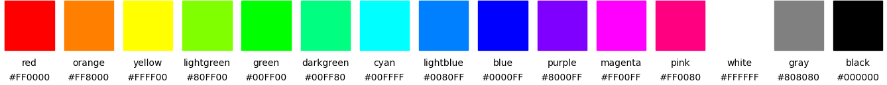colors_vivid: vivid colors. 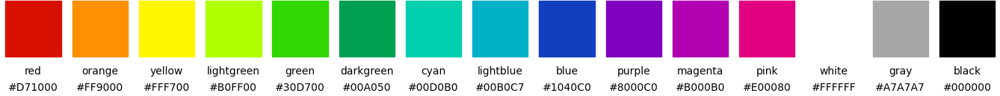colors_muted: muted colors. 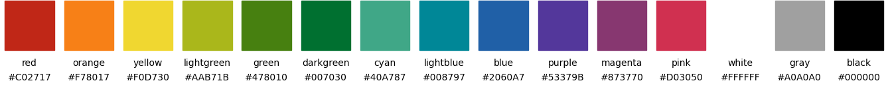colors_tableau: matplotlib's tableau (tab10) colors. 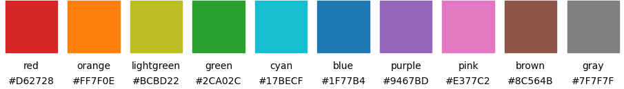colors_henninger: colors by Joerg Henninger upond which the muted colors are build. 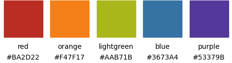colors_scicomp: colors from the scientific computing script. 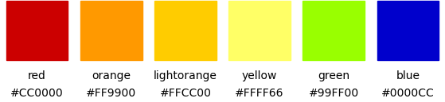colors_unituebingen: colors of the corporate design of the University of Tuebingen.
colors_itten: Farbkreis by Johannes Itten, 1961. 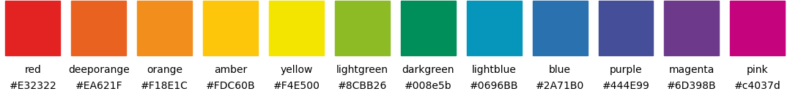colors_solarized: Ethan Schoonover's color palette, solarized. 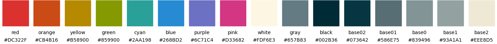-
colors_material: Google's material color palette. 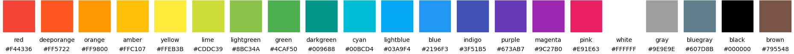 -
palettes: a dictionary with all defined color dictionaries.
Manipulating colors
lighter(): make a color lighter. 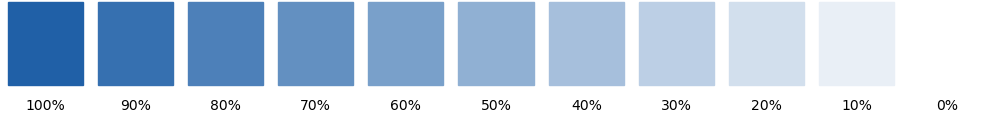darker(): make a color darker. 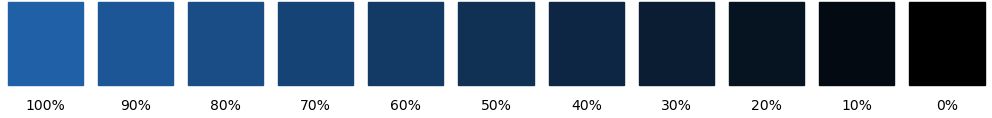gradient(): interpolate between two colors. 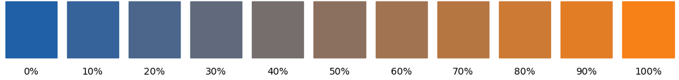
Exporting colors
latex_colors(): print\definecolorcommands for LaTeX.
Color maps
colormap(): generate and register a color map. 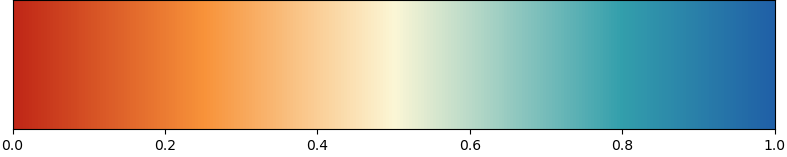cmap_color(): retrieve color from a color map.
Settings
colors_params(): set colors for the matplotlib color cycler.
Plot colors
plot_colors(): plot all colors of a palette and optionally some lighter and darker variants. 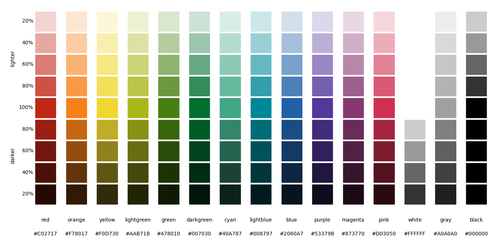plot_complementary_colors(): plot complementary colors of a palette on top of each other.plot_color_comparison(): plot matching colors of severals palettes on top of each other. 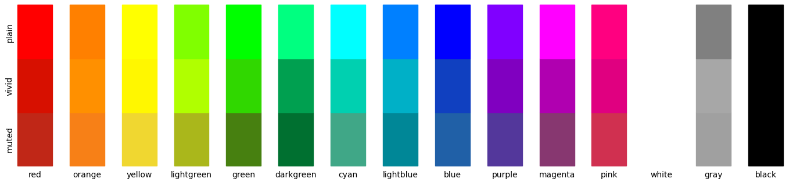plot_colormap(): plot a color map and its luminance. 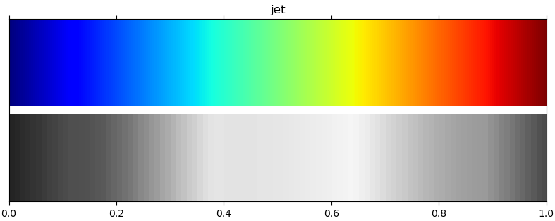
Functions
def lighter(color, lightness)-
Make a color lighter.
Parameters
color:dictormatplotlib color spec- A matplotlib color (hex string, name color string, rgb tuple) or a dictionary with an 'color' or 'facecolor' key.
lightness:float- The smaller the lightness, the lighter the returned color. A lightness of 0 returns white. A lightness of 1 leaves the color untouched. A lightness of 2 returns black.
Returns
color:stringordict- The lighter color as a hexadecimal RGB string (e.g. '#rrggbb').
If
coloris a dictionary, a copy of the dictionary is returned with the value of 'color' or 'facecolor' set to the lighter color.
Examples
For 40% lightness of blue do
import plottools.colors as c colors = c.palettes['muted'] lightblue = c.lighter(colors['blue'], 0.4) def darker(color, saturation)-
Make a color darker.
Parameters
color:dictormatplotlib color spec- A matplotlib color (hex string, name color string, rgb tuple) or a dictionary with an 'color' or 'facecolor' key.
saturation:float- The smaller the saturation, the darker the returned color. A saturation of 0 returns black. A saturation of 1 leaves the color untouched. A saturation of 2 returns white.
Returns
color:stringordictionary- The darker color as a hexadecimal RGB string (e.g. '#rrggbb').
If
coloris a dictionary, a copy of the dictionary is returned with the value of 'color' or 'facecolor' set to the darker color.
Examples
For 40% darker blue do
import plottools.colors as c colors = c.palettes['muted'] darkblue = c.darker(colors['blue'], 0.4) def gradient(color0, color1, r)-
Interpolate between two colors.
Parameters
color0:dictormatplotlib color spec- A matplotlib color (hex string, name color string, rgb tuple) or a dictionary with an 'color' or 'facecolor' key.
color1:dictormatplotlib color spec- A matplotlib color (hex string, name color string, rgb tuple) or a dictionary with an 'color' or 'facecolor' key.
r:float- Value between 0 and for interpolating between the two colors. r=0 returns color0, r=1 returns color1.
Returns
color:stringordict- The interpolated color as a hexadecimal RGB string (e.g. '#rrggbb'). If at least one of the colors is a dictionary, then return a copy of the first dictionary with the value of 'color' or 'facecolor' set to the interpolated color.
Raises
Keyerror
If a
color0orcolor1is a dictionary, but does not contain a 'color' or 'facecolor' key.Examples
For 30% transition between blue and orange do
import plottools.colors as c colors = c.palettes['muted'] color = c.gradient(colors['blue'], colors['orange'], 0.3) def latex_colors(colors, name='', model='rgb')-
Print
\definecolorcommands for LaTeX.Copy the color definitions from the console into you LaTeX preamble. Do not forget to load the
colororxcolorpackages before:\usepackage{xcolor}You then can use the newly defined colors with the usual commands, like for example:
\textcolor{red}{Some text in my special red.}Parameters
colors:matplotlib colorordictofmatplotlib colors- A dictionary with names and rgb hex-strings of colors or a single matplotlib color.
name:string- If colors is a single color, then name is the name of the color.
model:'rgb', 'RGB'or'HTML'- Color model.
Examples
Print LaTeX color definition for a single color:
import plottools.colors as c colors = c.palettes['muted'] c.latex_colors(colors['red'], 'red')writes to the console
\definecolor{red}{rgb}{0.753,0.153,0.090}Or print color definitions for a whole palette:
c.latex_colors(c.colors_vivid)writes to the console
\definecolor{red}{rgb}{0.843,0.063,0.000} \definecolor{orange}{rgb}{1.000,0.565,0.000} \definecolor{yellow}{rgb}{1.000,0.969,0.000} ... def colormap(name, colors, values=None)-
Generate and register a color map.
This is a simple shortcut to the cumbersome names and imports needed for
matplotlib.colors.LinearSegmentedColormapandmatplotlib.cm.register_cmap.Parameters
name:string- Name of the color map. You can use this name to set the colormap, e.g.
ax.contourf(x, y, z, cmap=name) colors:sequenceofmatplotlib color specifications- The colors from which to generate the color map.
values:sequenceoffloatsorNone- If None,
colorsare equidistantly mapped on the range 0 to 1. Otherwise for each color the position in the colors map range.
Returns
cmap:matplotlib colormap()- The color map generated from
colors.
Examples
Generate and register a color map from colors like this:
import plottools.colors as c colors = c.palettes['muted'] cmcolors = [colors['red'], c.lighter(colors['orange'], 0.85), c.lighter(colors['yellow'], 0.2), c.lighter(colors['lightblue'], 0.8), colors['blue']] cmvalues = [0.0, 0.25, 0.5, 0.8, 1.0] c.colormap('RYB', cmcolors, cmvalues)The new colormap can then be used directly by its name for the
cmaparguments ofimshow(),pcolormesh(),contourf(), etc.:ax.imshow(image, cmap='RYB') def cmap_color(cmap, x, alpha=None)-
Retrieve color from a color map.
Parameters
cmap:stringormatplotib colormap()- Name or instance of a matplotlib color map.
x:floatorsequenceoffloats- The fraction along the color map to be converted in to a color (between 0 and 1).
alpha:floatorNone- If specified, alpha value of the returned color.
Returns
color: tuple of floats, or sequence thereof. RGBA value of selected color.
Examples
Retrieve a single color from a color map:
jet_red = c.cmap_color('jet', 0.0) def colors_params(palette=None, colors=None, cmap=None)-
Set colors for the matplotlib color cycler.
Only parameters that are not
Noneare updated.Parameters
palette:dict- A dictionary with named colors.
colors:listofstrings- Names of the colors from
palettethat should go into the color cycler (rcParamaxes.prop_cycleoraxes.color_cycle). cmap:string- Name of default color map (
rcParam['image.cmap']).
def plot_colors(ax, colors, n=1)-
Plot all colors of a palette and optionally some lighter and darker variants.
Parameters
ax:matplotlib axes- Subplot to use for plotting the colors.
colors:dict- A dictionary with names and matplotlib colors.
n:int- If one, plot the colors of the palette only. If larger than one, plot in addition that many lighter and darker versions of the colors.
Examples
import matplotlib.pyplot as plt import plottools.colors as c fig, ax = plt.subplots() c.plot_colors(ax, c.palettes['muted'], 5) def plot_complementary_colors(ax, colors, n=0)-
Plot complementary colors of a palette on top of each other.
Parameters
ax:matplotlib axes- Subplot to use for plotting the colors.
colors:dict- A dictionary with names and matplotlib colors.
n:int- Number of additional gradient values to be plotted inbetween the complementary colors.
Examples
import matplotlib.pyplot as plt import plottools.colors as c fig, ax = plt.subplots() c.plot_complementary_colors(ax, c.palettes['muted']) def plot_color_comparison(ax, colorsa, *args)-
Plot matching colors of severals palettes on top of each other.
Parameters
ax:matplotlib axes- Subplot to use for plotting the colors.
colorsa:dictortuple (dict, string)orstring- A dictionary with names and matplotlib colors.
This is the reference palette which is plotted completely at the bottom.
The optional second name is used as a string to annotate the colors.
Alternatively, just the name of the color palette in
palettes. args:listofdictsortuples (dict, string)orstrings- Further dictionaries with names and matplotlib colors.
Colors with names matching the ones from
colorsaare plotted on top. The optional second element is used as a string to annotated the colors. Alternatively, just the names of the color palettes inpalettes.
Examples
import matplotlib.pyplot as plt import plottools.colors as c fig, ax = plt.subplots() c.plot_color_comparison(ax, ('muted', 'vivid', 'plain')) def plot_colormap(ax, cmap, luminance=True)-
Plot a color map and its luminance.
Parameters
ax:matplotlib axes- Axes for plotting gradient of the color map.
cmap:stringormatplotlib color map- Color map to be plotted.
luminance:bool- If True, also plot a gradient of the luminance of the color map.
Requires the
colorspaciouspackage.
Examples
import matplotlib.pyplot as plt import plottools.colors as c fig, ax = plt.subplots() c.plot_colormap(ax, 'jet', True) def demo(n=1, complementary=False, *args)-
Plot one or more color palettes or color maps.
If only one color palette is specified in
args, then plot this color palette in the following ways:- complementary colors plotted on top of each other if
complementaryis setTrue(usingplot_complementary_colors()). - complementary colors with
nintermediate colors, forn>1andcomplementarysetTrue(usingplot_complementary_colors()). - just the plain color palette, if
n==1(usingplot_colors()). - the color palette with darker and lighter colors for
n>1usingplot_colors(). - if a color map is specified, plot the map and its luminance using
plot_colormap().
If more than one color palette is specified, the color palettes are plotted on top of each other using
plot_color_comparison(). Only the colors named by the first palette are drawn. Ifargscontains the single elementall, then all available color palettes are compared.Parameters
n:int-
- 1: plot the selected color palette
- n>1: plot the selected color palette with n-1 lighter and darker colors or n gradient values for 'complementary'
complementary:bool- If
True, plot complementary colors of the selected palette *args:listofstrings- names of color palettes or color maps.
- complementary colors plotted on top of each other if